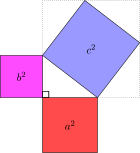

- Klipp ut formene i Figur 1 (Det er viktig at du klipper fint).
- Hvilken av formene kan du sette sammen slik at de blir eksakt like store som en annen form?
- Hvis du tar bort de fire firkanter fra Figur 2, hvilke rektangler kan du da fjerne fra Figur 1 for at det som er igjen i Figur 1 og Figur 2 har likt areal?
- Hva er sammenhengen mellom arealet til det røde kvadratet, det rosa kvadratet og det blå kvadratet?
- Se på Figur 3 og Figur 4. Hva er verdien til c?
- Se på Figur 5 og Figur 6.
Finn uttrykket for arealet til det røde kvadratet.
Finn uttrykket for arealet til det rosa kvadratet
Finn uttrykket for arealet til det blå kvadratet
- Hvis en trekant er rettvinklet, vil man alltid kunne lage en figur som denne?
- Hva sier Pytagoras' setning?

Se vedlegg. Alle de ensfargede firkantene i figurene er rektangler, og de grønne trekantene er kongruente og rettvinklede. Det totale
arealet er likt på alle figurene.